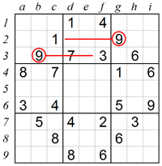
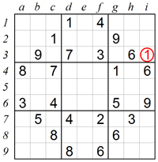
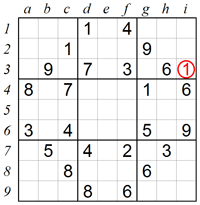

Rules
Each puzzle consists of a 9x9 grid containing given clues in various places. The object is to fill all empty squares so that the numbers 1 to 9 appear exactly once in each row, column and 3x3 box.
Classic Sudoku Techniques
1. Scanning in one direction:
In our first example we will focus on box 2, which like any other box in Sudoku must contain 9. Looking at box 1 and box 3 we can see there are already 9s in row 2 and in row 3, which excludes the two bottom rows of box 2 from having 9. This leaves square e1 as the only possible place into which 9 can fit in.

2. Scanning in two directions:
The same technique can be expanded by using information from perpendicular rows and columns. Let’s see where we can place 1 in box 3. In this example, row 1 and row 2 contain 1s, which leaves two empty squares in the bottom of box 3. However, square g4 also contains 1, so no additional 1 is allowed in column g. This means that square i3 is the only place left for 1.
 

Diagonal Sudoku

Rules
Each puzzle consists of a 9x9 grid containing given clues in various places. The object is to fill all empty squares so that the numbers 1 to 9 appear exactly once in each row, column, diagonal and 3x3 box.
Diagonal Sudoku Techniques
1. Scanning in one direction:
In our first example we will focus on box 2, which like any other box in Sudoku must contain 9. Looking at box 1 and box 3 we can see there are already 9s in row 2 and in row 3, which excludes the two bottom rows of box 2 from having 9. This leaves square e1 as the only possible place into which 9 can fit in.
2. Scanning in two directions:
The same technique can be expanded by using information from perpendicular rows and columns. Let’s see where we can place 1 in box 3. In this example, row 1 and row 2 contain 1s, which leaves two empty squares in the bottom of box 3. However, square g4 also contains 1, so no additional 1 is allowed in column g. This means that square i3 is the only place left for 1.